| Imagen |
Raza |
Descripción |
|
Humanos |
Son los típicos seres humanos de los MMORPG. Tienen parámetros equilibrados. Clases comunes: Paladines,
Sacerdotes. |
| 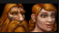 |
Enanos |
Son más bajos y más gordos que los humanos y siempre tienen barba. Tienen agilidad y vitalidad. Clases
comunes: Cazadores, Guerreros. |
| 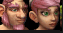 |
Gnomos |
Son los más bajos y tienen mucha inteligencia. Suelen ser Magos, Brujos o Pícaros. Clases comunes:
Magos, Brujos, Pícaros. |
| 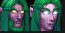 |
Elfos Nocturnos |
Tienen muchísima agilidad. Son muy altos y de color violeta. Muy comunes los Cazadores, los Druidas y
los Pícaros. Clases comunes: Cazadores, Druidas, Pícaros. |
| 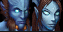 |
Draenei |
(Sólo con World of Warcraft: The Burning Crusade). Gozan de buena fuerza y muy buen espíritu pero no se
puede descartar su inteligencia. Son grandes y azulados. Sus clases más comunes son el Paladín y el
Sacerdote. Clases comunes: Paladines, Sacerdotes. |
| 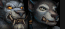 |
Huargen |
(Sólo con World of Warcraft: Cataclysm). Poseen bastante fuerza y agilidad, acompañado por algo de
espíritu y vitalidad. Clases comunes: Varía. |
|
Pandaren |
(Sólo con World of Warcraft: Mists of Pandaria). Los Pandaren son una raza neutral que puede elegir
unirse a la Alianza o la Horda. Su elección de facción determina sus clases disponibles. Clases comunes:
Varía. |
| Imagen |
Raza |
Descripción |
| 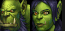 |
Orcos |
Dotados de mucha fuerza y mediana vitalidad, estas criaturas verdosas son comúnmente elegidas como
Guerreros y en ocasiones Chamanes. Clases comunes: Guerreros, Chamanes. |
| 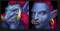 |
Trolls |
Familiares de los Elfos de la noche, estos seres altos pero encorvados y con unos enormes colmillos en
la boca parecidos a los de los elefantes tienen mucha agilidad. Muchos son Chamanes y Cazadores. Clases
comunes: Chamanes, Cazadores. |
| 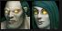 |
Renegados |
No-muertos con buena inteligencia y espíritu. La mayoría son Brujos, Sacerdotes y Magos. Clases comunes:
Brujos, Sacerdotes, Magos. |
| 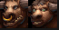 |
Taurens |
Son bóvidos gigantes que caminan a dos extremidades. Su vitalidad es enorme y su fuerza también. Suelen
ser Chamanes, Druidas y Guerreros. Clases comunes: Chamanes, Druidas, Guerreros. |
| 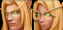 |
Elfos de Sangre |
(Sólo con World of Warcraft: The Burning Crusade). Son elfos civilizados y muy parecidos a humanos, que
tienen mucha agilidad, aparte de una destacable inteligencia. Son muy comunes los Paladines y Magos. Se
ven pocos Brujos, Sacerdotes y Cazadores. Clases comunes: Paladines, Magos. |
| 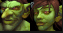 |
Goblins |
(Sólo con World of Warcraft: Cataclysm). Pertenecen al Cártel Pantoque. Poseen una inteligencia y una
agudeza solo comparable a la de los Gnomos. Clases comunes: Varía. |
|
Pandaren |
(Sólo con World of Warcraft: Mists of Pandaria). Los Pandaren son una raza neutral que puede elegir
unirse a la Alianza o la Horda. Su elección de facción determina sus clases disponibles. Clases comunes:
Varía. |
| Imagen |
Raza |
Descripción |
| 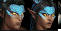 |
Dracthyr |
Los dracthyr son una de las razas jugables en World of Warcraft, introducidas en Dragonflight. Están
disponibles tanto para la Alianza como para la Horda, la segunda raza en World of Warcraft que tiene
esta opción después de los pandaren. Los dracthyr eligen su facción en el momento de la creación del
personaje. Son únicos porque solo pueden seleccionar la nueva clase Evoker. |
| 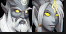 |
Lightforged Draenei |
Los draenei Forjados por la Luz son una de las razas aliadas jugables de la Alianza en World of
Warcraft, introducidas al final de Legion. A diferencia de sus hermanos que tomaron el Exodar para huir
de la Legión Ardiente en busca de aliados, estos draenei se unieron a los naaru para luchar contra
demonios en todo el cosmos, formando el Ejército de la Luz. |
| 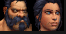 |
Kul tiranos |
Son una de las razas aliadas jugables de la Alianza en World of Warcraft, introducidas en Battle for
Azeroth. Una raza específica de humanos que proviene de la nación insular de Kul Tiras, son más
musculosos que sus primos del continente, pero comparten una historia que abarca las guerras con la
Horda. |
| 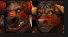 |
Tauren Monte Alto |
Los tauren Monte Alto son una de las razas aliadas de la Horda jugables en World of Warcraft,
introducidas al final de Legion. Formados por cuatro tribus: Monte Alto, Melena de Río, Cuerno del Cielo
y Tótem de Sangre, son nativos de las Islas Abruptas a diferencia de sus parientes Kalimdor. |
| 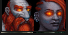 |
Enano Hierro Negro |
Los enanos Hierro Negro son una de las razas aliadas jugables de la Alianza en World of Warcraft,
introducidas en Battle for Azeroth. Famosos por sus dotes de magia y su historia de traición, los Hierro
Negro habían luchado durante mucho tiempo contra la Alianza y la Horda bajo el mando de fuerzas del mal.
|
| 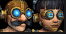 |
Mecagnomos |
Los mecagnomos son una de las razas aliadas jugables de la Alianza en World of Warcraft, introducidas en
Battle for Azeroth. Un grupo pionero de gnomos que se instaló en la isla Mecandria en busca de
tecnología titánica, comenzaron a mejorar sus cuerpos mortales con acero y robótica. |
| 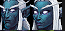 |
Nocheterna |
Una rama de los elfos de la noche que optaron por aislarse del mundo durante el primer ataque de la
Legión Ardiente a Azeroth, los shal'dorei se vieron obligados a aliarse con los demonios en su tercera
invasión. |
| 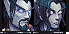 |
Elfos del Vacío |
Una vez elfos de sangre, sucumbieron a la corrupción del vacío después de que una expedición que
exploraba nuevas magias saliera mal. Alleria Brisaveloz, que recientemente había aprendido a aprovechar
la sombra y usarla para el bien de Azeroth, salvó a estos elfos descarriados enseñándoles control. A
cambio, ahora sirven a la Alianza. |
| 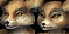 |
Vulpera |
Un pueblo desértico nativo de las arenas de Vol'dun, fueron aterrorizados durante generaciones por el
imperio sethrak hasta que recibieron ayuda de la Horda. |
| 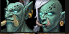 |
Troll Zandalari |
Los trolls Zandalari son una de las razas aliadas de la Horda jugables en World of Warcraft,
introducidas en Battle for Azeroth. Son los progenitores de todos los trolls y, como tales, gobiernan un
antiguo y poderoso imperio en los Mares del Sur, del cual toman su nombre. |
| 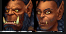 |
Orco Mag'har |
Después de los acontecimientos de la Ciudadela del Fuego Infernal en el Draenor alternativo, los restos
de la Horda de Hierro y el clan Lobo Gélido se unieron en un clan conocido simplemente como Mag'har, que
significa "incorrupto" en orco. Durante la Cuarta Guerra, la Horda abrió un portal de regreso al Draenor
alternativo, solo que esta vez muchos años después desde su punto de vista, para reclutarlos en el
conflicto contra la Alianza. |